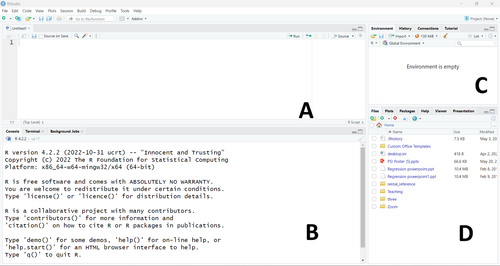
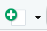
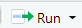
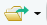
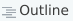
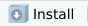

R e RStudio
![]()
1 Instalação
O é um ambiente de software para computação estatística, distribuído como software livre e gratuito, está disponível para diversas plataformas como Windows, MacOS e Linux.
O RStudio é um ambiente de desenvolvimento integrado (IDE) desenvolvida pela Posit criado para facilitar a programação em R oferecendo diversos recursos para o usuário.
É necessário que ambos estejam instalados em sua máquina, você pode realizar o download do R no site do CRAN e o RStudio no site da POSIT.
2 Interface do RStudio
O Rstudio é composto de quatro janelas principais:

: Editor (Source)
O editor é o local onde escrevemos e organizamos os nossos códigos (scripts) em R para serem executados. Isso permite que seja possível organizar nosso fluxo de trabalho nas análises e termos em mão os códigos sempre que necessário para rodar novamente os comandos, atualizar o nosso código e compartilhar o trabalho com parceiros.
Para criar um novo arquivo de script acesse o menu em File > New File > R Script ou clique no . Isso criará um novo arquivo em branco no qual você pode editar o seu código em R. Você pode editar múltiplos arquivos simultaneamente.
Os códigos no script precisam ser executados explicitamente, eles não rodam de maneira automática. Para rodar os comandos você pode pressionar simultaneamente CTRL + Enter no Windows/Linux ou COMANDO + Enter no MacOS. Você também pode selecionar o código que deseja executar e pressionar o botão  no canto superior direito do editor de scripts.
Você pode executar a linha atual posicionando o cursor em qualquer ponto da linha, ou selecionando uma parte específica do código que deseja executar. É possível executar multiplos comandos em sequência selecionando os respectivos trechos desejados no código.
Você vai perceber que todo código é executado no Console, e a grande vantagem do arquivo de script é ter um registro do fluxo de códigos, já que o console armazenda os comandos mas só nos permite executar o último comando executado por vez.
Para salvar o seu arquivo de código você pode acessar o menu File > Save as… ou clicar no no topo da janela. Uma vez que o arquivo tenha sido salvo uma primeira vez e nomeado, você pode utilizar o atalho CTRL + s para salvar o arquivo.
Nomes de arquivos devem ser significativos, escritos em minúsculo e terminados em .R se um arquivo de script, .Rmd se de Rmarkdown ou .qmd se Quarto.
Evite utilizar caracteres especiais (acentos, virgulas, pontos…) e espaços, use _ ao inves disso. Se os arquivos precisam ser executados em uma ordem específica, enumere-os sequencialmente.
01-primeiro_script.R, 02-segundo_script.R …
Você pode abrir arquivos salvos previamente indo no menu File > Open File… e selecionando o(s) arquivo(s) que deseja, ou no ícone . No teclado, pode usar CTRL + o.
: Console
O Console é onde todos os comandos em R são executados e os resultados exibidos, com exceção dos gráficos. Você vai notar o símbolo >, os comandos podem ser inseridos diretamente no console e executados pressionando Enter. Mas escrever código diretamente no console não é lá muito prático.
A cada vez que uma sessão do R é inicializada, no Console são exibidas informações como a versão do R sendo utilizada. Para limpar o console voce pode usar o atalho CTRL + l. Lembre-se que ao limpar o console os resultados exibidos nele também são perdidos.
: Environment and history
Na aba Environment você encontrará todos os objetos criados durante a execução dos códigos. Variáveis criadas, dados importados, tudo isso é exibido em um formato de lista nesta aba. Na aba history consta o histórico de comandos executados na sessão atual do R.
:Files, plots, packages and help
Neste conjunto de abas fica o explorador de arquivos, são exibidos os gráficos que criamos (plots), a lista de pacotes disponíveis e também são exibidos os arquivos de ajuda do R.
Estas janelas (A,B,C,D) podem ser configuradas ao gosto do usuário, para isso você pode acessar o menu View > Pane > Pane Layout e configurar seu ambiente de trabalho da forma que achar melhor.
3 Vamos praticar?
- Crie um novo arquivo de script no editor.
- Salve o seu arquivo em um local apropriado.
4 A sintaxe do R
O R assim como qualquer linguagem de programação segue uma sintaxe1. Importante lembrar que o R é case sensitive, ou seja, a linguagem faz diferenciação entre caracteres maiúsculos e minúsculos. Isso é essencial na hora de invocar funções e objetos.
Seu script deve sempre fazer sentido pra você para qualquer um que vá ler o seu código, pra isso utilizamos algumas convenções na hora de escrever código em R. Você pode utilizar o # para incluir comentários no seu código. Comentários são trechos de texto que não são interpretados como comandos no R e ajudam a organizar e até mesmo a explicar partes do código no script.
Combinando # com - você pode criar seções dentro do script, gerando automaticamente um menu de navegação que facilita a movimentação em um script longo. Você pode ver este menu clicando no botão  no canto superior direito do seu script.
Quando escrever o seu código evite linhas muito longas, quebre o código em múltiplas linhas pra torná-lo mais legível e permitir assim o uso inclusive de comentários no meio do fluxo de código.
5 Objetos e Funções
5.1 Objetos
Tudo em R é um objeto. Objetos podem ser de várias classes como vetores, listas, matrizes, gráficos e inclusive conjuntos de dados completos.
Os nomes dos objetos em R são bem flexíveis, entretanto como comentado anteriormente, R é case sensitive e faz dinstinção entre letras maíusculas e minúsculas. Nomes de objetos em R podem conter letras, números (desde que não no início do nome), e caracteres especiais como _ e ..
Para definirmos um objeto em R podemos utilizar <- ou =, estes são os operadores de atribuição.
Se você observar a aba Environment que já discutimos antes, verá que os objetos que criamos aparecem nesta aba. E no código acima para exibir o valor contido no objeto, basta chamar o nome do objeto como fizemos e executar a linha.
5.2 Funções
Uma Função em linguagem de programação nada mais é do que um conjunto de operações que recebe argumentos e exibe um resultado. Funções requerem que os argumentos sejam informados entre (). Vamos tentar ilustrar de maneira mais fácil. Imagine uma Cafeteira como uma função. Para fazer Café (nosso resultado), precisamos fornecer a cafeteira água e pó (argumentos). A cafeteira então esquenta a água, despeja sobre o pó e coa (operações). E no final obtemos o nosso !!
6 Pacotes
6.1 Instalando Pacotes
Quando temos um conjunto grande de funções, podemos combiná-las em um Pacote R. O R é composto de inúmeros pacotes que desempenham as mais diversas funções. A instalação básica do R já conta com muitos pacotes disponíveis, e podemos instalar pacotes adicionais sempre que necessário utilizando pacotes oficiais no repositório do CRAN ou disponíveis em repositórios no GitHub.
Para instalar um ou mais pacotes no R podemos utilizar o comando install.packages. Ou você também pode instalar os pacotes na aba Packages clicando em  e procurando na barra pelo nome do pacote. Para instalar mais de um pacote de uma vez basta separar o nome dos pacotes com ,.
Este material utiliza o pacote tidyverse que provavelmente se você instalou o R pela primeira vez pode ser que ainda não o tenha no seu computador, vamos instalar agora então? Basta rodar o código abaixo! Pode demorar alguns minutos a depender da sua configuração de computador e internet, tenha paciência jovem padawan!
6.2 Carregando pacotes
Só precisamos instalar os pacotes uma única vez. Os pacotes no R recebem atualizações constantes, então muitas vezes você será perguntado se quer atualizar os seus pacotes.
Uma vez instalados, para ter acesso as funções em um pacote precisamos carregar ele na nossa sessão no R. Para isso usamos o comando library.
── Attaching core tidyverse packages ──────────────────────── tidyverse 2.0.0 ──
✔ dplyr 1.1.4 ✔ readr 2.1.5
✔ forcats 1.0.0 ✔ stringr 1.5.1
✔ ggplot2 3.5.1 ✔ tibble 3.2.1
✔ lubridate 1.9.3 ✔ tidyr 1.3.1
✔ purrr 1.0.2
── Conflicts ────────────────────────────────────────── tidyverse_conflicts() ──
✖ dplyr::filter() masks stats::filter()
✖ dplyr::lag() masks stats::lag()
ℹ Use the conflicted package (<http://conflicted.r-lib.org/>) to force all conflicts to become errors6.3 Mensagens de Aviso e Erro
A maioria dos pacotes em R exibem mensagens de inicialização/carregamento. É muito importante se familiarizar com estas mensagens! No momento do carregamento o R avisa sobre erros no processo de inicialização, ou emite alertas importantes sobre conflitos em funções no pacote. Acostume-se a sempre checar as mensagens de inicialização para ter certeza que o pacote foi iniciado corretamente.
7 Ajuda do R
Todo pacote do R vem acompanhado de sua documentação. A documentação é o primeiro lugar no qual você deve procurar ajuda para qualquer dúvida que lhe ocorrer. Muitos problemas para quem está começando a trabalhar com a linguagem vem justamente ao ignorar a documentação das funções e o arquivo de ajuda. Eles servem para te mostrar como a função funciona, quais seus argumentos e formatos de entrada e qual as saídas esperadas.
Além disso, muitos pacotes oferecem também um vasto conteúdo teórico a respeito das análises que realizam. Isso também auxilia a compreender o que está acontecendo ao utilizar determinada função. LEIAM A DOCUMENTAÇÃO SEMPRE!!!
Para utilizar a ajuda do R você pode ir na aba Help e procurar pelos termos de interesse, ou pode utilizar a função help() dentro do código. Também é possível acessar a documentação de uma função específica colocando uma ? antes da chamada da função. Colocando ?? antes de uma palavra faz uma busca em toda a documentação pelo termo informado. Execute os códigos abaixo.
Footnotes
Sintaxe, em linguagem de programação, refere-se ao conjunto de regras e estruturas que definem a forma correta de escrever código em uma linguagem específica. Assim como a gramática em uma língua natural, a sintaxe determina como os comandos, instruções e expressões devem ser organizados e escritos para que o código seja compreendido e executado corretamente pelo compilador ou interpretador da linguagem.↩︎